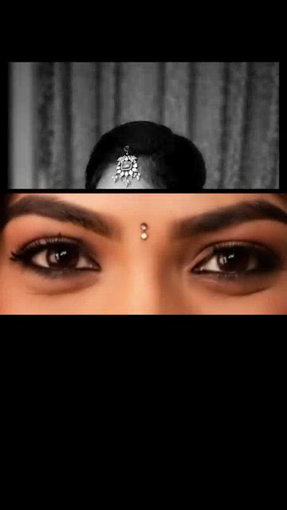
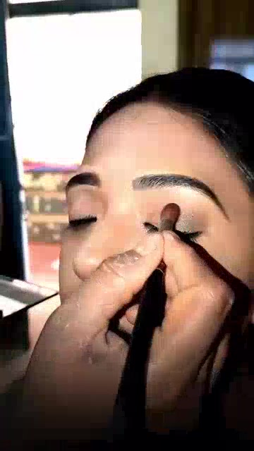
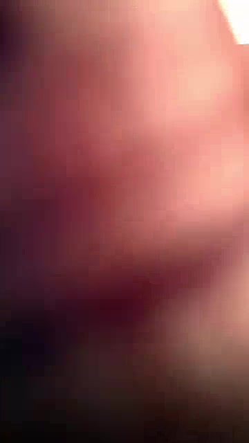

MUA Social
Media
15 days of content direction, reel creation and social media management — built to turn a quiet page into a stronger point of attention.

Not just posting.
Building attention.
The objective was to make the page feel active, relevant and worth stopping for. I shaped the content direction, created the reels and managed the creative side of the page — then used audience response to see what was gaining traction.
A few of the reels created during the 15-day push.


Direction → Creation → Management
Content direction — planned short-form content around the page and audience.
Reel creation — edited and produced the videos with attention to hooks, pacing and presentation.
Social management — managed the creative execution and read audience response throughout the sprint.
In 15 days, views moved from roughly 200 to 2,000.
The page gained followers and the work generated one lead. The immediate numbers mattered — but the bigger win was identifying creative choices that could turn attention into action.